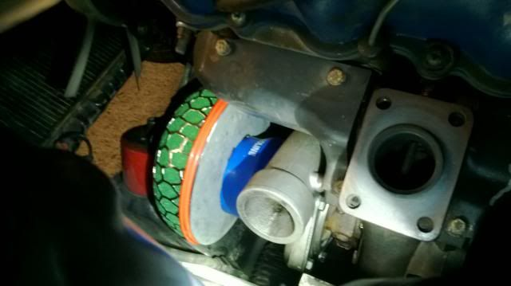

-
I have done some research but nothing really conclusive or definite on the answer.
I am wanting to go to a MAF blow through setup and I am wanting to put a filter directly on the turbo inlet.
First off, I have done enough research to know that the mesh setup is a really really dumb idea.
I am thinking between the HKS green foam style filter vs a K&N filter.
I am leaning more towards K&N because of the higher durability comments.
Thinking this one…
http://www.ebay.com/itm/181164316214…84.m1423.l2649
^This one above is a really good shape and size that would fit very nicely (including the strange cone shape to clear the motor mount extension bracket).
Thoughts?? -
Do you have a top mount? or stock location. If top mount check out my filter. Fits very nicely and flows plenty of air. Good for you finding mesh is retarded. I still laugh at the people who do it with big turbo cars and think it helps airflow.Usual Z31 suspect: Garage Queen (aka broken)

-
I'm running a foam filter directly on the inlet of mine. Axel Kain and Z Car Go are doing so as well. Mine and Axel is on a stock T3 with a cheapo filter (this one I believe http://www.frozenboost.com/product_i…39cd333d322f24) and Z Car Go is running an HKS because it's the only one he found that would fit on the Holset. You should try that K&N and see how it goes. The only thing I would be concerned about is sucking in some of the oil that's on the filter. Maybe see if you can find a similar one from the AFE Dryflow line, or from AEM and whatever their dry filter line is called.Prius… because Pretentious wouldn't fit across the back of the car…
Cheap, Fast, Reliable - pick any two
My 1986 Turbo Build -
Prius… because Pretentious wouldn't fit across the back of the car…
Cheap, Fast, Reliable - pick any two
My 1986 Turbo Build -
They don't make one small enough. Max height for my turbo in the stock location is around 3-3.75 inches.300zxturboftw;344382 wrote: Do you have a top mount? or stock location. If top mount check out my filter. Fits very nicely and flows plenty of air. Good for you finding mesh is retarded. I still laugh at the people who do it with big turbo cars and think it helps airflow.
PTE 6765 (4" inlet) on stock OEM location. I still have cold A/C
jaqattack02;344385 wrote: AFE has a "build your own filter" page.
http://afepower.com/shop/custom/filter.php
I will try the K&N. I think it will fit.
I just hope it will breathe well enough. -
Amerboot, something like this.
HKS mushroom on a GT35 with a 4" inlet.

This is the 200mm Diameter filter, its so tight you actually have to remove the "HKS button" and replace it with a countersunk screw. You need to make an offset base plate to allow it to fit into the natural groove the cross member makes. And the engine mount needs smoothed slightly with a grinder to fit the contour of the Air Filter.
This is on my actual car, its a very tight fit and very frustrating to install, requires unbolting the engine mount to clean/remove the filter.85 Turbo Slick Top
__________________________________________________ _____ -
There is a lot of meat on the engine mount that you can remove. Infact, you can grind away the entire bracket until you see the seam in the weld. It's welded on the other side, it will stay well intact, and you can just run a bead down the seam again to melt it together better, and then grind it flush again (because the factory welds didn't look like they penetrated a damn thing, very cold welds). -
I have my filter set up exactly like this and everything works great.james;344927 wrote: Amerboot, something like this.
HKS mushroom on a GT35 with a 4" inlet.
This is the 200mm Diameter filter, its so tight you actually have to remove the "HKS button" and replace it with a countersunk screw. You need to make an offset base plate to allow it to fit into the natural groove the cross member makes. And the engine mount needs smoothed slightly with a grinder to fit the contour of the Air Filter.
This is on my actual car, its a very tight fit and very frustrating to install, requires unbolting the engine mount to clean/remove the filter.1985 300ZX N/A => Turbo VG33ET -
Yeah, As far as i can see its as big as you can go on the filter side on a 4" inlet on a stock manifold setup. Mine is hard agaisnt the engine mount and touching the cross member, but rotated slightly away from the exhaust manifold. it would have been much easier with the 150mm Dia mushroom but I already had the 200 just sitting there.85 Turbo Slick Top
__________________________________________________ _____ -
what is the actual diameter of the wheel inlet, shrouding not included? you should use that as the minimum size of the filter flange/outlet diameter- which means you might see a filter in the size you require. -
I have ran the K&N and it collapsed after a years worth of driving the car hard. I would go the foam filter route and offset it like others are suggesting. Just my experience."Its the s12's sexy over weight step daughter, the z31" -
K&N RU-2510. Perfect fit for your 4" inlet turbo and location.Enroute to 500hp.
-
you could always use a cobra-head coupler to get it up higher and then use a 90 to relocate the filter somewhere else…
http://intakehoses.com/Merchant2/mer…gory_Code=CHEW -
The RC-8180 actually has a higher surface area than the RU-2510. I did the math on that.racingzx;345086 wrote: K&N RU-2510. Perfect fit for your 4" inlet turbo and location.
Here is the filter. It is a 4" offset filter. According to my calculations and measurements, it should fit just fine!
I am awaiting my solid motor mounts to test fit it.
-
that should fit perfect. again- you MIGHT need to shave the side of the engine mount that's double welded so it will be ok. you can even weld it back up and grind it down because the factory welds are cold so they didn't even penetrate well. it will fit for sure…
but what are you doing for crank case ventilation?

Copyright © 2006–. All rights reserved. Privacy Policy